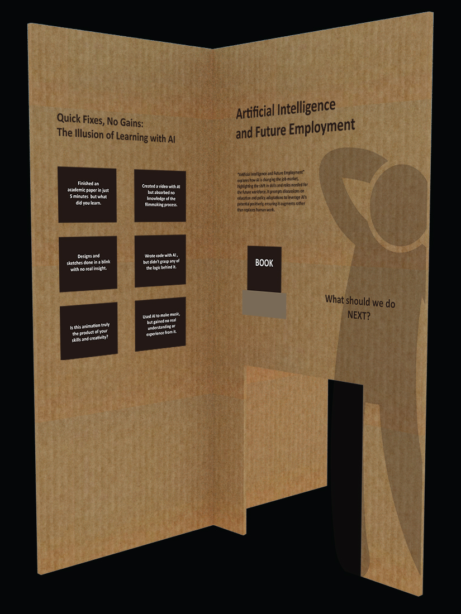

The intersection of Artificial Intelligence (AI) and future employment is a critical social issue that
examines how AI advancements are reshaping the job landscape. With AI's ability to automate tasks, from simple
data entry to complex decision-making, there's growing concern over job displacement and the need for workers
to adapt to new roles that AI technology creates or modifies.
This evolution prompts urgent questions about
which jobs will remain, which will change, and how the workforce can prepare for these shifts. It underscores
the importance of reimagining education and training programs to equip people with AI-compatible skills, and
developing policies to mitigate the risks of widening economic and social inequalities. Addressing these
challenges is essential for ensuring that the AI revolution benefits society at large, fostering an inclusive
job market where technology complements human capabilities and promotes broad-based prosperity.
